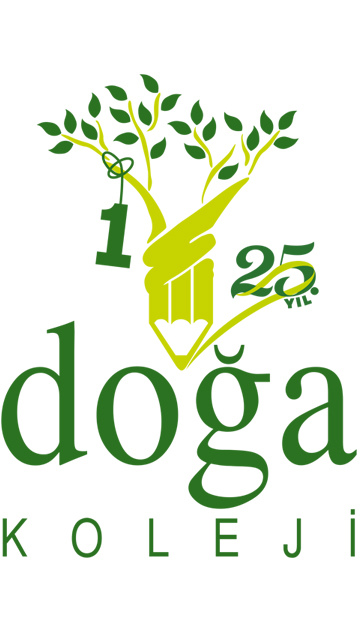

İstanbul’da ısıtma, klima, jeneratör ve havalandırma teknik servisi
2014’ten beri Sancaktepe merkezli çalışıyoruz. Isıtma, soğutma, jeneratör, elektrik ve havalandırma sistemlerinizin bakımını ve arızasını İstanbul genelinde yapıyoruz.
Hizmetlerimiz
Her sistem için kurulum, periyodik bakım ve arıza giderme hizmeti veriyoruz. Aradığınız hizmeti seçip ayrıntılara geçin.
Isıtma sistemleri
Kombi, kazan, radyatör ve merkezi ısıtma sistemlerinde kurulum, bakım ve onarım.
Isıtma sistemleri servisiSoğutma ve klima
Split, VRF, chiller ve endüstriyel soğutma sistemlerinde bakım ve arıza çözümleri.
Klima ve soğutma servisiJeneratör servisi
Dizel ve doğalgaz jeneratörlerde bakım, onarım ve acil müdahale.
Jeneratör bakım ve arızaElektrik tesisatı
Güç dağıtımı, pano montajı, kablo döşeme ve elektrik altyapı projeleri.
Elektrik tesisatı hizmetiPeriyodik bakım
Sözleşmeli bakım programlarıyla arızaları önceden önleyin, maliyeti kontrol altında tutun.
Periyodik bakım programlarıNem alma santrali bakımı ve arıza servisi
Havuz, depo ve üretim alanlarındaki nem alma santrallerinin periyodik bakımını ve arıza gidermesini yapıyoruz. Cihaz nem çekmiyor, tavan damlıyor veya serpantin buzlanıyorsa ekibimiz yerinde arıza tespiti yapar.
Neden Mesa Teknik?
Hızlı müdahale
İstanbul genelinde 2 saat içinde ekibimizi yanınıza göndermeyi hedefliyoruz. Acil durumlarda 7/24 destek veriyoruz.
Yazılı iş garantisi
Tüm hizmetlerimizde yazılı iş garantisi veriyor, yalnızca garantili orijinal yedek parça kullanıyoruz.
Sertifikalı ekip
Mühendis ve teknisyenlerimiz mesleki belgeye sahip ve ilgili sistemlerde deneyimli.
Şeffaf fiyat
Keşif ücretsiz. İş başlamadan net fiyat teklifi verir, gizli maliyet çıkarmayız.
Referanslarımız
Okullar ısıtma, havalandırma ve elektrik sistemlerinin kesintisiz çalışmasına ihtiyaç duyan kurumlardır. Eğitim kurumlarında teknik servis tecrübemizle şu markalara çözüm ortağı olduk:
 Bahçeşehir Koleji
Bahçeşehir Koleji
Doğa Koleji
Kurumunuz için bakım programı veya keşif talep etmek için bizimle iletişime geçin.
Mesa Teknik Hizmetler kimdir?
Mesa Teknik Hizmetler, 2014’ten bu yana İstanbul’da teknik servis hizmeti veren, Sancaktepe merkezli bir firmadır. Isıtma, soğutma, jeneratör, elektrik ve havalandırma sistemlerinde uzmanlaşan ekibimiz, güncel teknoloji ve orijinal yedek parçalarla kalıcı çözümler üretir.
Hizmet bölgelerimiz
- Sancaktepe
- Ümraniye
- Çekmeköy
- Ataşehir
- Sultanbeyli
- Pendik
- Kartal
- Maltepe
- Kadıköy
- Üsküdar
- Beylikdüzü
- Esenyurt
Listede olmayan ilçeler için de bize ulaşabilirsiniz; İstanbul genelinde çağrı alıyoruz.
Sık sorulan sorular
Hangi hizmetleri veriyorsunuz?
Isıtma sistemleri, klima ve soğutma, jeneratör servisi, elektrik tesisatı, periyodik bakım ve havalandırma sistemlerinde kurulum, bakım ve arıza hizmeti veriyoruz. Nem alma santralleri için yalnızca bakım ve arıza servisi sunuyoruz.
İstanbul’un hangi bölgelerine hizmet veriyorsunuz?
Merkezimiz Sancaktepe’de. Anadolu Yakası ilçelerine en hızlı ulaşıyoruz, İstanbul genelinde de çağrı alıyoruz.
Arıza çağrısında ne kadar sürede müdahale ediyorsunuz?
İstanbul genelinde 2 saat içinde müdahale etmeyi hedefliyoruz. Acil çağrılar için 7/24 hat açıktır.
Keşif ücretli mi?
Hayır. Keşif ücretsizdir ve iş başlamadan net fiyat teklifi verilir.
Sözleşmeli periyodik bakım yapıyor musunuz?
Evet. Arızaları önlemek ve maliyeti kontrol altında tutmak için sözleşmeli periyodik bakım programları sunuyoruz.
Servis talebi
Arıza ya da bakım talebiniz için bizi arayın veya WhatsApp’tan yazın. Cihazın marka, model ve sorununu belirtmeniz işi hızlandırır.
Telefon
Adres
Akpınar Mah. Piri Reis Cad. No:38
Sancaktepe / İstanbul
Çalışma saatleri
Pazartesi–Cuma 08:00–18:00
Cumartesi 09:00–15:00
Acil çağrı 7/24